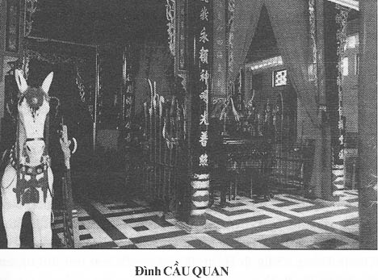

Nghệ sĩ sân khấu cải lương trong nửa thế kỷ trước đã từng phải sống trong tình trạng nghèo khó, ăn quán ngủ đình.
Trong những thập niên 60, 70, 80, một thời kỳ vàng son của cải lương, đa số nghệ sĩ đều có xe hơi, nhà cao cửa rộng, có tài xế riêng và người giúp việc trong nhà. Những đào kép dàn bao, bực trung cũng ở nhà lô, chung cư và phương tiện di chuyển thông thường là xe Honda, Vespa, Lambretta hay xe mô-tô BMW.
Thời kỳ này, tuy trong giới nghệ sĩ vẫn có sự giàu nghèo cách biệt, đồng lương chênh lệch rất nhiều nếu so sánh giữa đào, kép chánh và kép phụ hay công nhân sân khấu, nhưng nói chung mọi nghệ sĩ vẫn được “no cơm ấm áo”, không có cảnh chạy ăn từng bữa, nay ở gầm cầu, mai lang thang không nơi trú ngụ.
Sau 1975, một cuộc đổi đời bi thảm, mọi giá trị trên đời đều bị đánh giá lại theo quan điểm của những chủ nhân ông mới của đất nước, mọi nếp sống đều bị đảo lộn, nghệ sĩ cải lương cũng không thoát khỏi cái vòng xoáy đó của thời cuộc.
Sự phân chia giai cấp trong giới nghệ sĩ càng lúc càng rõ nét.
Có những nghệ sĩ được chế độ ưu đãi thì tiếp tục cuộc sống của những ông hoàng, bà chúa tân thời, tuy số người này ít, có thể đếm được trên đầu ngón tay, nhưng họ được thổi phồng lên, được quảng cáo rầm rộ, thành ra nếu khán giả không thật sự theo dõi, tìm hiểu một cách sâu xa, thì có thể lầm tưởng là sân khấu cải lương được đổi mới, hưng thịnh hơn xưa và nghệ sĩ cải lương hiện nay được sống cao sang hơn trước.
Sự thật thì hoàn toàn khác. Người ta được biết Bạch Tuyết vẫn ở biệt thự sang trọng, xe hơi có tài xế riêng, có con đi học bên Mỹ trong 12 năm liên tục. Kim Cương cũng sang giàu, con trai học và tốt nghiệp HEC của Montréal. Hồng Nga có con ở nước Áo. Lệ Thủy có con đi học ở Úc. Các nghệ sĩ như Kim Tử Long, Ngọc Huyền, Hoài Thanh, Diệp Lang, Ngọc Giàu, Hồng Nga, Minh Vương, Bảo Quốc được nhiều lần đi biểu diễn ở Úc, Pháp, Nga, và Canada.
Lần biểu diễn ở Toronto và Montréal của Minh Vương và Bảo Quốc bị người Việt định cư Canada kịch liệt phản đối, không hát được, nhưng báo chí trong nước vẫn quảng cáo là đồng bào nước ngoài sắp hàng, dành mua vé xem hát.
Hỏi ra những lần đi diễn ở Úc, Pháp, Nga thì phần lớn là diễn ở các quán ăn có chương trình ca nhạc, một hình thức giống quán nhậu có ca nhạc của Thanh Tú, Trang Bích Liễu hay Hoài Thanh, Đỗ Quyên. Dầu sao thì cũng được gọi là đi biểu diễn ở nước ngoài.
Cái giàu sang của Bạch Tuyết, Kim Cương, Lệ Thủy, Hồng Nga, Minh Vương không phải do thu hoạch trong khi hành nghề cải lương, mà là do một nguồn lợi khác.
Ở trong nước, từ những năm 1990, sân khấu cải lương đã bị sa sút trầm trọng. Nhiều đoàn tan rã. Có những đoàn chỉ còn cái tên của bảng hiệu như đoàn Thanh Nga, đoàn cải lương Sàigòn 1, đoàn Phước Chung. Nghệ sĩ Thanh Điền, Thanh Kim Huệ. Kim Tử Long, Ngọc Huyền, Ngân Huệ nếu muốn hát cải lưong thì bỏ một số vốn riêng để quy tụ đào kép, mượn bảng hiệu đoàn Saigon l để hát. Thanh Điền – Thanh Kim Huệ khi thua lỗ thì trả đoàn lại cho Sở Văn Hoá Thông Tin, quay về với cái nghề tay trái là chụp ảnh nghệ thuật để sinh sống, chờ cơ hội khác.
Đoàn cải lương Sàigòn 2, đoàn Sàigòn 3, đoàn Huỳnh Long, Minh Tơ, Hương Mùa Thu, Kịch nói Bông Hồng, Kịch nói Kim Cương, phải chịu rã gánh.
Phía sau cung điện vàng son
Dịp Tết, tôi về thăm quê hương, đêm mùng 1, mùng 2, mùng 3 Tết, đêm nào tôi cũng theo các bạn đồng nghiệp ra rạp Hưng Đạo coi hát cải lương. Khán giả mỗi đêm chỉ được độ gần hai trăm người. Chỉ hơn một phần ba khán phòng dưới đất, còn từng lầu 2, lầu 3 vắng tanh.
Tôi vô hậu trường, thăm hỏi Thanh Điền, Thanh Kim Huệ, Thanh Tuấn thì các bạn cho biết là đoàn kéo màn hát được là may rồi, vấn đề lương thì mấy năm nay chỉ lãnh bồi dưỡng, một số tiền tượng trưng thôi, cốt làm sao cho sân khấu cải lương được sáng đèn hàng đêm.
Toàn thành phố Sàigòn chỉ có một rạp duy nhứt hát cải lương là rạp Hưng Đạo.
Rạp Đại Đồng quận 3 thì mấy ngày Tết có nhóm nghệ sĩ Bạch Mai, Ngọc Đáng hát Hồ Quảng. Rạp Thủ Đô, Hào Huê, công viên Đầm Sen, Hồ Kỳ Hòa có diễn trích đoạn cải lương, xen với các màn trình diễn tạp kỹ, ca tân nhạc, tấu hài, ảo thuật, xiếc…
Tôi nghĩ là nếu muốn biết cuộc sống thật sự của giới nghệ sĩ cải lương trong tình hình sân khấu sa sút như vậy thì phải tìm đến nhà của các anh chị em đó, chính mắt mình quan sát, tai nghe chính những người trong cuộc kể về mình. Như vậy, rõ ràng và thực tế, và chắc chắn là sẽ khác hơn những gì nghe được ở Hội Sân Khấu.
Xóm nghệ sĩ đình Cầu Quan.

.Đình Cầu Quan, còn gọi là đình Thái Hưng, ở kế rạp hát bóng Diên Hồng (rạp Thành Xương cũ) đường Yersin, quận nhì. Nơi đây đã sản sinh ra rất nhiều thế hệ nghệ sĩ mà tên tuổi bây giờ và mai sau được nhiều người ái mộ sân khấu nhắc nhở, như: Xuân Yến, Hữu Cảnh, Thanh Tòng, Thanh Loan, Trường Sơn, Công Minh, Minh Tâm trong gia đình của Bầu Thắng, Minh Tơ, Khánh Hồng, Đức Phú, Bạch Cúc, Hoàng Nuôi... gia đình nghệ sĩ Thành Tôn, Huỳnh Mai với các con Bạch Liên, Bạch Lê, Thanh Bạch, Bạch Lựu, Bạch Lý, Bạch Long, Thành Lộc và những nghệ sĩ trẻ thế hệ thứ tư: Tú Sương, Thanh Thảo, Ngọc Trinh, Chấn Cường...
Tôi đến đình Cầu Quan khi lớp học ca diễn của Bạch Long đang hoạt động. Tiếng đàn, câu ca của các học viên đồng ấu làm cho tôi vô cùng xúc động, tình hình sân khấu sa sút, mất khán giả, đời sống nghệ sĩ đói nghèo, thu nhập thất thường, vậy mà cũng còn có người cho con em đi học nghề ca hát nữa kia!
Tôi ngỡ ngàng nhìn quanh mình khung cảnh quá hoang tàn, đổ nát. Trên những mảnh vụn vỡ của gạch ngói rêu phong, trong những miếng băng-rôn, những miếng tôn rỉ sét, chính là nơi nương náu của biết bao gia đình nghệ sĩ.
Chánh điện và sân đình còn lát gạch tàu khá tươm tất, ngoài ra mọi chỗ đều chấp vá, tạm bợ. Gia đình nghệ sĩ Chấn Đạt ở trên sàn sân khấu, xung quanh được che chắn bằng tất cả những gì có thể che chắn được.
Sàn bê-tông bị xói mòn theo năm tháng, tôi bước trên sàn nhà không dám mạnh chân, sợ vô ý sẽ làm vụn vỡ. Vậy mà, dưới sàn sân khấu này có những căn phòng: căn phòng dưới gầm sân khấu, chiều cao không quá một thước, chiếc xe đạp dắt vô không lọt.
Dưới gầm sân khấu đó có “căn nhà” của nghệ sĩ Trường Quang. Từ khi đoàn Minh Tơ giải tán, anh Trường Quang ở đây và chuyển nghề làm đạo cụ sân khấu. Khi cần diễn viên phụ hoặc công nhân hậu đài, anh cũng nhận làm để kiếm lương sống qua ngày. “Nhà” có 3 vách tường: một là của nhà hàng xóm, hai tường kia là của đình, phía trước trống trơn, mặc cho gió lùa mưa tạt...Mái là một mảnh nylon kéo dài.
Cũng trong khu nhà này, gia đình nghệ sĩ Trường Sơn trú ngụ. Trường Sơn, Thanh Loan (con gái của nghệ sĩ Minh Tơ), là cha mẹ của Trinh Trinh và Tú Sương, hai nghệ sĩ huy chương vàng Trần Hữu Trang. Hai cô gái trẻ này gắn bó với sân đình, sàn diễn và những mái nhà hết sức chênh vênh ấy từ thuở còn bập bẹ đánh vần, rồi đóng quân, chạy cờ, đóng thế nữ, kép con cho tới khi thành danh, đoạt huy chương vàng.
Dù chẳng phải là những mái nhà đúng nghĩa, nhưng dẫu sao kỷ niệm vẫn còn đầy ấp, thói ăn nếp ở đã quá thân quen. Bạch Long nói với tôi:
“Dù cháu biết là căn nhà cháu đang ngụ đây, gió lùa mưa tạt, ướt lênh láng trong ngoài, cháu vẫn không thể nào rời đây để mà kiếm nơi khác trú ngụ.”
Tôi hỏi “Tại sao? ”
Bạch Long cười, cái miệng méo xệ:
“Sân khấu cải lương và tuồng cổ đang sống dở, chết dở. Kiếm cái ăn còn không đủ no, tiền đâu mà mướn một chỗ ở khác? Chỉ mướn không, cũng không có tiền. Mua nhà là chuyện chiêm bao. Mà nói thiệt với chú, cháu cũng muốn nằm chiêm bao thấy mua được nhà, nhưng trong giấc chiêm bao cũng không bao giờ thấy có tiền. Chiêm bao, cứ thấy chủ nợ rượt chạy trối chết, không chiêm bao được cái gì khác hơn là Đói với Nợ”.
Xóm Nghệ Sĩ Sân Khấu Ma.
Ở Sàigòn có 2 xóm “nghệ sĩ sân khấu ma ”:
Một là ở khu mả lạng, đường Nguyễn Cư Trinh, chen lẫn trong những chòm mả, mấy mái tranh che lụp xụp, nơi đó có chỗ tạm trú của anh Tình Thiệt, xếp dàn cảnh của đoàn Thanh Nga. Có mái nhà của hề Nguyên Hạnh, diễn viên cải lương và kịch nói. Có những chỗ ở chung của các anh dàn cảnh đoàn Huỳnh Long như anh Xạc Ne, anh Sáu Chương, dàn cảnh đoàn Sàigòn 1.
Ban ngày các anh chạy xe ôm, có người làm phu khuân vác ở chợ Cầu Muối. Nếu có đoàn hát kêu thì các anh đi làm dàn cảnh ban đêm, ban ngày vẫn theo nghề tay trái.
Những ngôi nhà (nếu có thể gọi các chỗ che nylon, che mái tranh sát chòm mả là nhà) sắp bị giải tỏa. Đã có lịnh giải tỏa, nhưng các anh chưa kiếm được chỗ ở, nên dời đi loanh quanh đâu đó, yên thì lại trở về chòm mả.
Xóm thứ hai của nghệ sĩ sân khấu ma là ở vùng ven đô, thuộc tổ 44, ấp Thuận Quang, phường Tân Thới Nhất, quận 12.
Khác với xóm nghệ sĩ sân khấu ma vùng mả lạng Nguyễn Cư Trinh, chật hẹp, dựa theo các mái che của các ngôi mả, xóm mả khu Thuận Quang có những ngôi nhà của các gia đình nghệ sĩ chen chúc với những ngôi mộ trắng toát, chen trong những đám cỏ dại rợn người của bãi tha ma.
Nghệ sĩ Vương Phụng đã ở đây khoảng 20 năm rồi. Sau khi đoàn Kim Chung không còn hoạt động sau năm 75, anh về đây ở, buôn bán lặt vặt kiếm sống. Nhờ quen biết với anh, một số nghệ sĩ có hoàn cảnh khó khăn cũng xin về đây tá túc.
Hiện tại, xóm ma có 11 hộ gia đình của các nghệ sĩ Vương Phụng, Thanh Kim Hồng, Thanh Kim Của, Linh Cảnh, Bảo Trân, Ngọc Hải, Hoài Hận, Ngọc Thạch, Hoàng Liêm, Hiếu Châu...
Những nghệ sĩ này không còn hát hàng đêm vì các gánh hát các anh đi, đã rã. Các anh sống bằng đủ thứ nghề tay trái như chạy xe ôm, bán vé số, bán bánh trái, phu khuân vác hay làm công nhân các xí nghiệp…
Cuộc đời cứ lặng lẽ trôi đi, ngoảnh qua ngoảnh lại, tuổi đã ngoài bốn mươi. Làm nghề gì khác rồi cũng cứ nhớ sân khấu. Những khi có dịp là họ theo các đám hát chầu, hát đám hoặc tụ họp nhau đờn ca trong những đêm khuya vắng.
Một người bạn soạn giả chở tôi bằng xe Honda, tới thăm các bạn nghệ sĩ ở đình Cầu Quan, đình Cầu Muối, khu mả lạng Nguyễn Cư Trinh và khu xóm mả ở chòm mả Thuận Quang. Chúng tôi đến gầm cầu chữ Y, nơi này trước đây nghệ sĩ Văn Sa (cựu kép chánh của đoàn Kim Thoa), bà Ba Vân (vợ quái kiệt Ba Vân), vì bị lường gạt, mất nhà, phải sống dưới gầm cầu chữ Y. Bà Ba Vân đã được ở khu dưỡng lão và cũng đã chết ở nơi này.
Nghệ sĩ Văn Sa, các cô nữ diễn viên thinh sắc một thời như Thu Ba (đoàn Tiếng Chuông và Thanh Minh), Sáu Ngọc Sương, Đoàn Thiên Kim ( đoàn Kim Thoa ), Lệ Thắm, các trưởng đoàn hát đã giải thể: Hoàng Nở (đoàn Huỳnh Long), Thanh Hùng (đoàn Phước Chung), bầu Hiếu, soạn giả Thành Phát (Sàigòn 3), Đặng Lợi (đoàn Múa rối), Hoài Nam (họa sĩ),… đều ở nhà dưỡng lão nghệ sĩ ở đường Âu Dương Lân, Quận 8. Các anh, các cô tự an ủi mình, bây giờ không hát hò gì được vì sân khấu xuống cấp quá rồi, mình còn được ở nhà dưỡng lão, cơm có mà ăn, đau yếu đi y tế phường, chết được chôn ở nghĩa trang nghệ sĩ Gò Vấp. Vậy là quá hạnh phúc rồi!
Họ là những Ông Hoàng, Bà Chúa, những vị tướng lãnh tài ba trên sân khấu. Đêm đêm, họ sống trong vai tuồng trong những cung đình sơn son phết vàng, thướt tha nhung lụa, một cái phất tay người người khiếp sợ, lời ca tiếng hát ru hồn biết bao khán giả…
Khi cánh màn nhung khép lại, khi tuổi đời chồng chất, họ chỉ còn lại cho mình sự nghèo đói, cô đơn và sự quên lãng của người đời.
Tôi hỏi người bạn đồng nghiệp của tôi
– Trong số các diễn viên và các anh hậu đài thất nghiệp đó, nhiều người có thể đổi nghề để kiếm cuộc sống khá hơn. Tại sao họ vẫn bám sân khấu, khi có hát, khi không?
Anh bạn của tôi nói:
– Họ mướn những căn phòng trong các hậu cứ của các đoàn hay chung cư hoặc hậu trường sân khấu, các đình mà trước đây có hợp đồng với các đoàn tuồng cổ, nếu họ không còn là nghệ sĩ nữa thì họ phải dời đi chỗ khác, mà dời đi đâu? Tiền mướn nhà, mướn phòng không phải rẻ. Vậy nên họ vẫn mang tiếng là người của đoàn hát để có chỗ ở, khi đoàn hát có hát thì họ làm việc ban đêm, ban ngày đi bán vé số, chạy xích lô, đi xe ôm hay khuân vác ở chợ Cầu Muối. Biết làm sao bây giờ? Cơ chế thị trường mà!
Tôi nói:
– Cơ chế thị trường là cái gì? Anh nói danh từ chánh trị, tôi không hiểu. Nếu ” Cơ chế thị trường ” là làm lời ăn lỗ chịu, tư nhân làm chủ thì hồi đó các ông bà bầu gánh cũng làm lời ăn lỗ chịu. Sao họ làm cho sân khấu cải lương huy hoàng. Bây giờ vô tay nhà nước, sao mà tan hoang hết trơn vậy?
Anh bạn của tôi nhìn trước nhìn sau rồi nói nhỏ: “Thôi, đừng nói chuyện này nữa, được hông? Hồi đó thì chuyện tình yêu, chuyện dã sử, soạn giả nào muốn viết sao cho ăn khách được thì viết. Bây giờ: ngày 3 tháng 2 phải viết những ngày thành lập Đảng; ngày 8 tháng 3 ngày phụ nữ; ngày 30 tháng 4 ngày giải phóng; ngày 19 tháng 5 sinh nhật cụ; ngày 27 tháng 7 ngày thương binh liệt sĩ;, ngày 19 tháng 8 cách mạng tháng Tám; ngày 2 tháng 9 ngày tuyên bố độc lập; ngày 23 tháng 9 Nam kỳ khởi nghĩa; ngày 1 tháng 10 kỷ niệm cách mạng Trung Hoa; ngày 17 tháng 10 kỷ niệm cách mạng Nga; ngày 19 tháng 12 kỷ niệm toàn quốc kháng chiến; rồi Tết thì viết về Tết Mậu Thân Tổng tấn công… v.v…
Vậy đó! Ở Phường, Quận, Thành Phố hay Tỉnh nào cũng phải sáng tác và biểu diễn như vậy, hỏi sao khán giả không coi nữa?”
Những cuộc gặp gỡ, những điều vô tình biết được về thực trạng sân khấu cải lương ở Việt Nam, về cuộc sống quá kham khổ và những nghề tay trái bất đắc dĩ của nghệ sĩ thất nhiệp đã làm cho tôi bất ngờ và bất nhẫn!
Đến bao giờ thì Cải Lương mới tìm lại được cái thuở hoàng kim, để nghệ sĩ trở về sân khấu, được sống đúng với nghề nghiệp và nỗi đam mê của mình?